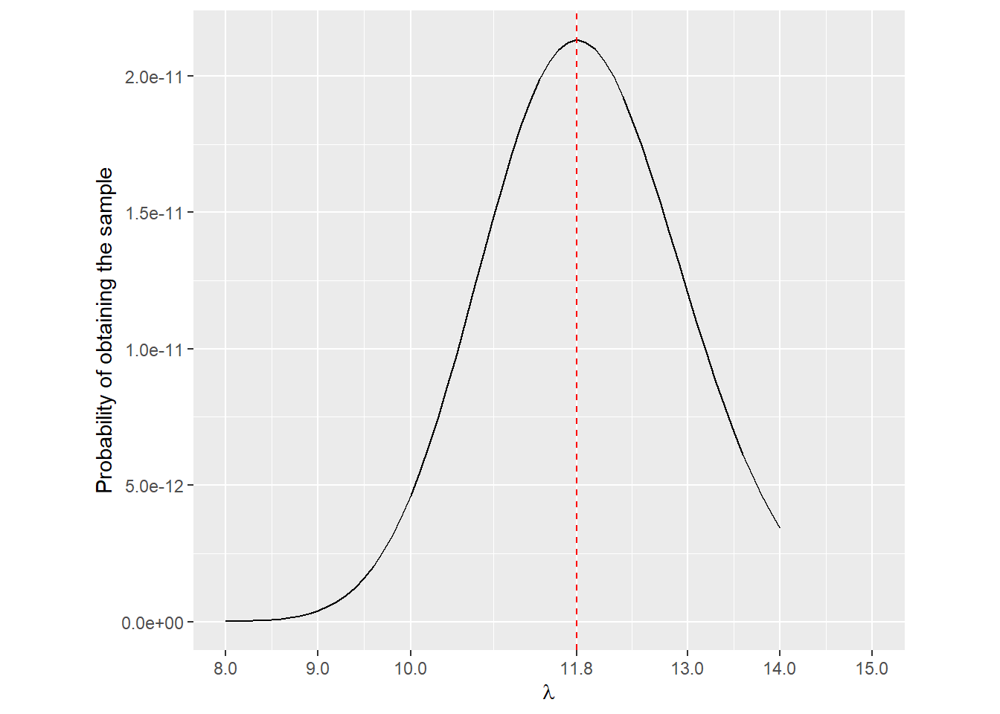

1 Point Estimation
1.1 Statistical Inference
- The process of making educated guess and conclusions regarding a population, using a sample of that population is called Statistical Inference.
- Two important problems in statistical inference are estimation of parameters and tests of hypothesis
- Estimation can be of the form of point estimation and interval estimation.
1.2 Point Estimation
Main Task
- Assume that some characteristic of the elements in a population can be represented by a random variable \(X\).
- Assume that \(X_1, X_2, \dots, X_n\) is a random sample from a density \(f(x, \theta)\), where the form of the density is known but the parameter \(\theta\) is unknown.
- The objective is to construct good estimators for \(\theta\) or its function \(\tau (\theta)\) on the basis of the observed sample values \(x_1, x_2, \dots, x_n\) of a random sample \(X_1, X_2, \dots, X_n\) from \(f(x, \theta)\).
Definition: Statistic
Suppose \(X_1, X_2, \dots, X_n\) be \(n\) observable random variables. Then, a known function \(T=g(X_1, X_2, \dots, X_n)\) of observable random variables \(X_1, X_2, \dots, X_n\) is called a statistic. A statistic is always a random variable.
Definition: Estimator
Suppose \(X_1, X_2, \dots, X_n\) is a random sample from a density \(f(x, \theta)\) and it is desired to estimate \(\theta\). Suppose \(T=g(X_1, X_2, \dots, X_n)\) is a statistic that can be used to determine and approximate value for \(\theta\). Then \(T\) is called an estimator for \(\theta\). An estimator is always a random variable.
Definition: Estimate
Suppose \(T=g(X_1, X_2, \dots, X_n)\) be an estimator for \(\theta\). Suppose that \(x_1, x_2, \dots, x_n\) is a set of observed values of the random variable \(X_1, X_2, \dots, X_n.\) Then the value \(t=g(x_1, x_2, \dots, x_n)\) obtained by substituting the observed values in the estimator is called an estimate for \(\theta\).
Therefore the estimator stands for the function of the sample, and the word estimate stands for the realized value of that function.
Notation: An estimator of \(\theta\) is denoted by \(\hat{\theta}\). An estimate of \(\theta\) is also denoted by \(\hat{\theta}\). The difference between the two should be understood based on the context.
| Parameter | Estimator: Using random sample (\(X_1, X_2, \dots, X_n\)) | Estimate 1: Using observed sample (\(1,4,2,3,4\)) | Estimate 2: Using observed sample (\(4,2,2,6,3\)) |
|---|---|---|---|
| \(\mu\) | \(\hat{\mu}=\bar{X}\) | \(\hat{\mu}=\) | \(\hat{\mu}=\) |
| \(\sigma^2\) | \(\hat{\sigma^2}=S^2\) | \(\hat{\sigma^2}=\) | \(\hat{\sigma^2}=\) |
1.2.1 Methods of finding point estimators
- In some cases there will be an obvious or natural candidate for a point estimator of a particular parameter.
- For example, the sample mean is a good point estimator of the population mean
- However, in more complicated models we need a methodical way of estimating parameters.
- There are different methods of finding point estimators
- Method of Moments
- Maximum Likelihood Estimators (MLE)
- Method of Least Squares
- Bayes Estimators
- The EM Algorithm
- However, these techniques do not carry any guarantees with them.
- The point estimators that they yeild still must be evaluated before their worth is established
1.2.1.1 Method of Moments
- Let \(X_1, X_2, \dots X_n\) be a random sample from a population with pdf or pmf \(f(x; \theta),\) where \(\theta = (\theta_1, \theta_2, \dots, \theta_k)\) and \(k\geq 1\).
- Sample moments \(m^\prime\) (Sample moments \(m\) about \(0\)) and population moments \(\mu^\prime\) are defined as follows
| Sample moment | Population moment |
|---|---|
| \(m_1= \frac{1}{n}\sum_{i=1}^nX_i\) | \(\mu_1^\prime=E(X)\) |
| \(m_2= \frac{1}{n}\sum_{i=1}^nX_i^2\) | \(\mu_2^\prime=E(X^2)\) |
| \(\dots\) | \(\dots\) |
| \(m_k^= \frac{1}{n}\sum_{i=1}^nX_i^k\) | \(\mu_k^\prime=E(X^k)\) |
Each \(\mu_j^\prime\) is a function \(\theta,\) i.e. \(\mu_j^\prime= \mu_j^\prime(\theta_1, \theta_2, \dots, \theta_k)\) for \(j=1,2,\dots, k.\)
Method of Moments Estimators (MME)
We first equate the first \(k\) sample moments to the corresponding \(k\) population moments,
\[m_1 \approx \mu_1^\prime,\] \[m_2 \approx \mu_2^\prime,\] \[\dots\] \[m_k\approx \mu_k^\prime,\]
Then we solve the resulting systems of simultaneous equations for \(\hat{\theta_1}, \hat{\theta_2}, \dots, \hat{\theta_k}\)
Remarks on Method of Moments Estimators
- Very easy to compute
- Always give an estimator to start with
- Generally consistent (Since sample moments are consistent for population moments)
- Not necessarily the best or most efficient estimators
1.2.1.2 Maximum Likelihood Estimators (MLE)
Example
A company receives a certain number of orders per day, and this count appears to follow a Poisson distribution with a parameter \(\lambda\).
The recorded number of orders over 10 randomly chosen days are: \(12,14,15,12,13,10,11,15,10,6\)
Deriving the Joint Probability Expression
We can express the probability of observing this particular set of order counts, i.e.,\(P(X_1=12, \; X_2 = 14, \dots, X_{10} = 6)\) as a function of \(\lambda\).
\[\text{Joint probability of the data} = P(X_1=12, \; X_2 = 14, \dots, X_{10} = 6)\] \[=\frac{e^{-\lambda}\lambda^{12}}{12!}\frac{e^{-\lambda}\lambda^{14}}{14!}\dots\frac{e^{-\lambda}\lambda^{6}}{6!}\]

By treating this probability of obtaining the sample as a function of \(\lambda\), we obtain the likelihood function, which represents how likely different values of \(\lambda\) are given the observed data.
The graphical representation indicates that the likelihood function reaches its maximum when \(\lambda = 11.8\).
Since these data have already occurred, it is very likely that the data have arisen from a Poisson distribution with \(\lambda =11.8\).
This value is referred to as the maximum likelihood estimate (MLE) of \(\lambda\).
Theory
- In order to define maximum-likelihood estimators, we shall first define the likelihood function.
Definition: Likelihood function
Let \(x_1,x_2, \dots, x_n\) be a set of observations of random variables \(X_1, X_2, \dots, X_n\) with the joint density of \(n\) random variables, say \(f_{X_1, X_2, \dots, X_n}(x_1,x_2, \dots, x_n;\; \theta)\). This joint density function, which is considered to be a function of \(\theta\) is called the likelihood function of \(\theta\) for the set of observations (sample) \(x_1,x_2, \dots, x_n.\)
In particular, if \(x_1,x_2, \dots, x_n\) is a random sample from the density \(f(x; \theta)\), then the likelihood function is \(f(x_1; \theta)f(x_2; \theta) \dots f(x_n; \theta).\)
Notation
We use the notation \(L(\theta;\;x_1,x_2, \dots, x_n)\) for the likelihood function, in order to remind ourselves to think of the likelihood function as a function of \(\theta.\)
- Likelihood function is seen as a function of \(\theta\) rather than \(x\)
- Likelihood can be viewed as the degree of plausibility.
- An estimate of \(\theta\) may be obtained by choosing the most plausible value, i.e., where the likelihood function is maximized.
Definition: Maximum Likelihood Estimator
Let \(L(\theta)=L(\theta;\;x_1,x_2, \dots, x_n)\) be the likelihood function of \(\theta\) for the sample \(x_1,x_2, \dots, x_n.\) Suppose \(L(\theta)\) has its maximum when \(\theta = \hat{\theta}.\)
Then \(\hat{\theta}\) is called the Maximum likelihood estimate of \(\theta\).
The corresponding estimator is called the Maximum likelihood estimator of \(\theta\).
- Many likelihood functions satisfy regularity conditions; so the maximum likelihood estimator is the solution of the equation \[\frac{dL(\theta)}{d\theta} = 0\]
Log-likelihood function
Let \[l(\theta) = ln[L(\theta)].\]
Then, \(l(\theta)\) is called the log-likelihood function.
- Both \(L(\theta)\) and \(l(\theta)\) have their maxima at the same value of \(\theta\).
- It is sometimes easier to find the maximum of the logarithm of the likelihood and thereby simplify the calculations in finding the maximum likelihood estimate.
Invariance Property of MLE’s
If \(\hat{\theta}\) is the MLE of \(\theta\), then for any function \(\tau(\theta),\) the MLE of \(\tau(\theta)\) is \(\tau(\hat{\theta}).\)
1.2.2 Methods of evaluating estimators
We discussed several methods of obtaining point estimators.
It is possible that different methods of finding estimators will lead to same estimator or different estimators.
In this section we discuss certain properties, which an estimator may or may not posses, that will guide us in deciding whether one estimator is better than another.
1.2.2.1 Unbiasedness
Definition: Unbiased estimator
An estimator \(\hat{\theta}\) \((=t(X_1, X_2, \dots, X_n))\) is defined to be an unbiased estimator of \(\theta\) if and only if \(E(\hat{\theta}) = \theta\)
The difference \(E(\hat{\theta}) -\theta\) is called as the bias of \(\hat{\theta}\) and denoted by \(Bias(\hat{\theta}) = E(\hat{\theta}) - \theta\)
An estimator whose bias is equal to 0 is called unbiased.
This means that, on average, the estimator correctly estimates \(\theta\), though it may fluctuate from sample to sample.
Asymptotic unbiasedness
An estimator \(\hat{\theta}\) of a parameter \(\theta\) is said to be asymptotically unbiased if its bias
\[Bias(\hat{\theta}) = E(\hat{\theta}) - \theta\]
satisfies
\[\lim_{n \to \infty}Bias(\hat{\theta}) = 0.\]
This means that as the sample size \(n\) increases, the bias of the estimator vanishes, making it approximately unbiased for large samples.
1.2.2.2 Consistency
Mean-Squared Error
- The mean-squared error is a measure of goodness or closeness of an estimator to the target.
Definition: Mean-squared Error (MSE)
The mean-squared error of an estimator \(\hat{\theta}\) of \(\theta\) is defined as \(MSE(\hat{\theta})= E\left[(\hat{\theta} - \theta)^2 \right]\)
The MSE measures the average squared difference between \(\hat{\theta}\) and \(\theta\).
The MSE is a function of \(\theta\) and has the interpretation
\[MSE(\hat{\theta})= Var(\hat{\theta})+ \left[Bias(\hat{\theta}) \right]^2\]
Therefore the MSE incorporates two components, one measuring the variability of the estimator (precision) and the other measuring its bias (accuracy).
Small value of MSE implies small combined variance and bias.
If \(\hat{\theta}\) is unbiased, then \(MSE(\hat{\theta})= Var(\hat{\theta})\)
The positive square root of MSE is known as the root mean squared error \(RMSE(\hat{\theta})= \sqrt{MSE(\hat{\theta})}\)
Consistency
- Estimator \(\hat{\theta}\) is said to be consistent for \(\theta\) if \(MSE(\hat{\theta})\) approaches zero as the sample size \(n\) approaches \(\infty\).
\[lim_{n\rightarrow \infty}E\left[(\hat{\theta} - \theta)^2 \right]=0\]
- Mean-squared error consistency implies that the bias and the variance both approach to zero as \(n\) approaches \(\infty.\)
1.2.2.3 Best Unbiased Estimator
Why Finding the “Best” Estimator Is Difficult
When estimating an unknown parameter \(\theta\), different estimators can be used. The Mean Squared Error (MSE) is a common criterion for comparing estimators because it considers both bias and variance:
\[MSE(\hat{\theta})= Var(\hat{\theta})+ \left[Bias(\hat{\theta}) \right]^2\]
However, a comparison based solely on MSE does not always yield a clear winner. The reason is that:
There is no single “best” MSE estimator – Some estimators may have lower variance but higher bias, while others have low bias but high variance.
The class of all possible estimators is too large – Without restrictions, choosing the best estimator is too complex.
Restricting the Class of Estimators
To make this problem tractable, we restrict our focus to only unbiased estimators, which satisfy:
\[E[\hat{\theta}] = \theta\] By focusing on unbiased estimators, we can now ask: Among all unbiased estimators, which one has the smallest variance? This leads us to the Uniform Minimum Variance Unbiased Estimator (UMVUE).
Uniform Minimum Variance Unbiased Estimator (UMVUE)
Definition
An estimator \(W^*\) is a best unbiased estimator of \(\tau(\theta)\) if it satisfied \(E(W^*) = \tau(\theta)\) for all \(\theta\) and, for any other estimator \(W\) with \(E(W) = \tau(\theta)\), we have \(Var(W^*) \leq Var(W)\) for all \(\theta\). \(W^*\) is also called a uniform minimum variance unbiased estimator (UMVUE) of \(\tau(\theta)\)
In other words, an estimator \(\theta\) is a uniform minimum variance unbiased estimator if
It is unbiased: \(E(\hat{\theta}) = \theta\).
It has the smallest variance among all unbiased estimators.
Why Do We Care About UMVUE?
Since unbiased estimators fluctuate around the true value, we prefer the one that varies the least. This ensures better precision.
Example
Suppose we want to estimate the mean \(\mu\) of a population using a sample of size \(n\). Two possible estimators are:
- Sample mean:
\[\hat{\mu}_1 = \frac{1}{n}\sum_{i=1}^nX_i\]
which is unbiased because \(E(\hat{\mu}_1) = \mu\)
- Only using the first sample:
\[\hat{\mu}_2 = X_1\] which is also unbiased but has higher variance.
Although both estimators are unbiased, \(\hat{\mu}_1\) is better because it has lower variance.
For a normal distribution \(X_1, X_2, \dots, X_n \sim N(\mu, \sigma^2)\), the sample mean:
\[\hat{\mu}_1 = \frac{1}{n}\sum_{i=1}^nX_i\]
is the UMVUE for \(\mu\), meaning it has the lowest variance among all unbiased estimators.
However, finding the best unbiased estimator (if it exists) is not easy. In some cases, no such estimator exists at all. Even when an unbiased estimator is available, identifying the one with the lowest variance—the best unbiased estimator—requires solving a complex mathematical optimization problem.
1.2.2.3.1 Cramér-Rao Inequality
Why Is This Useful?
Even the best estimator cannot be perfect. The Cramér-Rao bound (CRB) tells us the smallest possible variance for any unbiased estimator. However, an estimator achieving this bound might not exist in certain cases.
Theorem: Cramér-Rao Inequality
Let \(X_1, \dots, X_n\) be a sample with pdf \(f(x|\theta)\), and let \(W(X) = W(X_1,\dots, X_n)\) be any estimator satisfying
\[\frac{d}{d\theta} E[W(X)] = \int_x \frac{\partial }{\partial \theta}[W(x)f(x|\theta)] dx\] and
\[Var(W(X)) < \infty.\]
Then
\[Var(W(X)) \geq \frac{( \frac{d}{d\theta} E[W(X)])^2}{E\left[\left(\frac{\partial }{\partial \theta} lnf(X|\theta)\right)^2\right]}.\]
In other words, For an unbiased estimator \(\hat{\theta}:\)
\[Var(\hat{\theta}) \geq \frac{1}{I(\theta)}\] where \(I(\theta)\) is the Fisher Information:
\[I(\theta) = E\left[\left(\frac{\partial }{\partial \theta} lnf(X|\theta)\right)^2\right]\]
The quantity, \[I(\theta) = E\left[\left(\frac{\partial }{\partial \theta} lnf(X|\theta)\right)^2\right]\] is called the information number or Fisher information of the sample as it quantifies the amount of information that the observed data carries about the unknown parameter \(\theta\). It gives a bound on the variance of the best unbiased estimator of \(\theta\). As the information number gets bigger and we have more information about \(\theta\), we have a smaller bound on the variance of the best unbiased estimator.
Example
For a normal distribution \(X_1, X_2\dots,X_n\sim N(\mu, \sigma^2):\), the Fisher Information is: \[I(\mu) = \frac{n}{\sigma^2}\]
Thus the Cramér-Rao lower bound is
\[Var(\hat{\mu}) \geq \frac{\sigma^2}{n}.\] Since \(Var(\hat{\mu}) = \frac{\sigma^2}{n},\) the sample mean \(\hat{\mu}\) achieves this bound, making it the most efficient unbiased estimator.
1.2.2.4 Sufficiency – Using all available information efficiently
Why do we need sufficiency?
An estimator should make full use of the available data. If we can summarize all relevant information into a single function of the data, we can reduce the problem to estimating from that summary.
Definition: Sufficient Statistic
A statistic \(T(X)\) is a sufficient Statistic for a parameter \(\theta\) if the conditional distribution of the sample \(X\) given the value of \(T(X)\) does not depend on \(\theta\).
In other words, once you know \(T(X)\), the sample data doesn’t give any extra information about \(\theta\).
Factorization Theorem (Easy way to check Sufficiency)
A statistic \(T(X)\) is sufficient for \(\theta\) if the likelihood function can be factored as:
\[L(\theta|X) = g(T(X), \theta) h(X)\]
where \(g(T(X), \theta)\) depends on \(\theta\) only through \(T(X)\)
Example
For a normal distribution \(X_1,\dots,X_n \sim N(\mu, \sigma^2):\), the statistic:
\[T= \frac{1}{n}\sum X_i\]
is sufficient for \(\mu\).
This means that all the useful information about \(\mu\) is contained in the sample mean \(T\).
1.2.2.5 Rao-Blackwell Theorem – Improving an estimator
Why Is This Important?
The Rao-Blackwell theorem provides a way to improve an estimator by using a sufficient statistic. This often leads to the UMVUE.
Theorem : Rao-Blackwell Theorem
Let \(W\) be any unbiased estimator of \(\tau(\theta),\) and let \(T\) be a sufficient statistic for \(\theta\). Define \(\phi(T) = E(W|T).\) then \(E(\phi(T)) = \tau(\theta)\) and \(Var(\phi(T)) \leq Var(W)\) for all \(\theta\); that is , \(\phi(T)\) is a uniformly better unbiased estimator of \(\tau(\theta).\)
In other words,
Let \(\hat{\theta}\) be an unbiased estimator of \(\theta\), and let \(T(X)\) be a sufficient statistic. then the improved estimator:
\[\hat{\theta^*} = E[\hat{\theta}|T(X)]\] is unbiased and has variance less than or equal to \(\hat{\theta}.\)
Motivation
If an estimator does not fully use all available information (i.e., it is not based on a sufficient statistic), then it can be improved by conditioning on that statistic.
Example
Suppose we have a normal distribution \(X_1,X_2,\dots,X_n \sim N(\mu, \sigma^2).\)
The estimator \(X_1\) alone is unbiased for \(\mu\), but it ignores most of the data.
The sample mean \(\hat{\mu} = \frac{1}{n}\sum(X_i)\) is sufficient for \(\mu\).
By the Rao-Blackwell theorem, the improved estimator:
\[E[X_1|\hat{\mu}] = \hat{\mu}\]
has lower variance than \(X_1\).
Thus, \(\hat{\mu}\) is the UMVUE for \(\mu.\)
Summary
| Concept | Key Idea | Example |
|---|---|---|
| Unbiased Estimator | Expected value equals the true parameter. | Sample mean \(\hat{\mu}\) is unbiased for \(\mu\) |
| UMVUE | Best unbiased estimator with lowest variance. | Sample mean is UMVUE for \(\mu\). |
| Sufficiency | A statistic that contains all information about \(\theta\). | Sample mean is sufficient for \(\mu\) |
| Rao-Blackwell Theorem | Improves an estimator using sufficiency. | \(\hat{\mu}\) is better than \(X_1\). |
| Cramér-Rao Inequality | Sets the lower bound for variance. | \(Var(\hat{\mu}) \geq\frac{\sigma^2}{n}\). |
These ideas are fundamental in statistics and machine learning for choosing the best estimator.
Chapter 1: Tutorial
Let \(X_1, X_2, \dots, X_n \sim Poisson(\lambda).\) Derive a method of moment estimators for \(\lambda\).
Let \(X_1, X_2, \dots, X_n \sim iid\;\; N(\mu, \sigma^2),\) both \(\mu\) and \(\sigma^2\) unknown. Derive a method of moment estimators for \(\mu\) and \(\sigma\).
Let \(X_1, X_2, \dots, X_m \sim iid\;\; Bin(n,\theta),\) both \(n\) and \(\theta\) unknown. Derive a method of moment estimators for \(n\) and \(\theta\).
Let \(X_1, X_2, \dots, X_n \sim iid\;\; Unif(\theta_1,\theta_2),\) where \(\theta_1<\theta_2\), both unknown. Derive a method of moment estimators for \(\theta_1\) and \(\theta_2\).
- Let \(X_1, X_2, \dots, X_n \sim iid\;\; Gamma(\alpha,\beta),\) both \(\alpha\) and \(\beta\) unknown. Derive a method of moment estimators for \(\alpha\) and \(\beta\).
The survival time (in weeks) of 20 randomly selected male mouse exposed to 240 units of certain type of radiation are given below.
\[152, 115, 109, 94, 88, 137, 152, 77, 160, 165, 125, 40, 128, 123, 136, 101, 62, 153, 83, 69\] It is believed that the survival times have a gamma distribution. Estimate the corresponding parameters.
- Let \(x_1, x_2, \dots, x_n\) be \(n\) random measurements of random variable \(X\) with the density function \[f_X(x;\lambda)= \lambda x^{\lambda-1},\;\; 0<x<1, \;\; \lambda>0\] Derive a method of moment estimator for \(\lambda\).
Let \(x_1, x_2, \dots, x_n\) be a random sample of size \(n\) from a Poisson distribution with parameter \(\lambda\). Derive the maximum likelihood estimator of \(\lambda\).
Let \(x_1, x_2, \dots, x_n\) be a random sample of size \(n\) from a normal distribution with mean \(\mu\) and variance \(\sigma^2\). Derive the maximum likelihood estimators of \(\mu\) and \(\sigma^2\).
- Let \(X_1, X_2, \dots, X_n \sim iid \; Poisson (\lambda)\). Find the MLE of \(P(X\leq 1)\)
- Let \(X_1, X_2, \dots, X_n \sim iid \; N (\mu, \sigma^2)\). Find the MLE of \(\mu/\sigma\).
- Let \(X_1, X_2, \dots, X_n\) be a random sample from an exponential distribution with the density function \[f_X(x;\lambda)= \lambda e^{-\lambda x},\;\; x>0.\] Is the maximum likelihood estimators of \(\lambda\) unbiased?
Hint
Let \(X_1, X_2, \dots, X_n\) be independent and identically distributed (i.i.d.) exponential random variables with rate parameter \(\lambda\), i.e.,
\[X_i\sim \text{Exp}(\lambda)\quad i=1,2,\dots,n.\] Then, the sum of these \(n\) independent exponential random variables
\[S_n = X_1+X_2+\dots+X_n\]
follows a gamma distribution with shape parameter \(n\) and rate parameter \(\lambda\):
\[S_n\sim \text{Gamma}(n,\lambda).\]
Further, for any positive integer \(n(> 0)\), Gamma fucntion, \(\Gamma(n) = (n −1)!\).
- Let \(X_1, X_2, \dots, X_n\) be a random sample of size \(n\) from a normal distribution with mean \(\mu\) and variance \(\sigma^2\). Show that \(\bar{X}\) and \(S^2 = \frac{\sum_{i=1}^n(X_i-\bar{X})^2}{n-1}\) are unbiased estimators of \(\mu\) and \(\sigma^2\), respectively.
- Let \(x_1, x_2, \dots, x_n\) be a random sample of size \(n\) from a normal distribution with mean \(\mu\) and variance \(\sigma^2\). Consider the maximum likelihood estimators of \(\sigma^2\). Show the estimator \(\hat{\sigma^2} = \frac{\sum_{i=1}^n(X_i-\bar{X})^2}{n}\) is biased for \(\sigma^2\), but it has a smaller MSE than \(S^2 = \frac{\sum_{i=1}^n(X_i-\bar{X})^2}{n-1}\).
Hint
Distribution of sample variance of a normal distribution
Suppose that \(X_1, X_2, \dots, X_n\) is a random sample from a normal distribution with mean \(\mu\) and variance \(\sigma^2\). Let \(\bar{X} = \frac{X_1+X_2+\dots + X_n}{n}\) be the sample mean and \(S^2 = \frac{1}{n-1}\sum_{i=1}^n(X_i-\bar{X})^2\) be the sample variance. Then,
\[\frac{(n-1)S^2}{\sigma^2} \sim \chi^2_{n-1}.\]
- Let \(X_1, X_2, \dots, X_n\) be a random sample from some distribution and \(E(X) = \mu\) and \(V(X) = \sigma^2\). Show that \(\bar{X}\) is a better estimator than \(X_1\) and \(\frac{X_1+X_2}{2}\) for \(\mu\) in terms of MSE.
Let \(X_1, X_2, \dots, X_n\) be a random sample from a \(N(\mu, \sigma^2).\) Let \(\bar{X}= \frac{\sum_{i=1}^nX_i}{n}\) and \(T=\frac{\sum_{i=1}^n(X_i-\bar{X})^2}{n}\). Show that \(\bar{X}\) is consistent for \(\mu\) and \(T\) is consistent for \(\sigma^2.\)
Let \(X_1, X_2, \dots, X_n\) be a random sample from a normal distribution \[X_i \sim N(\mu,\sigma^2)\] where \(\mu\) is the unknown mean parameter and \(\sigma^2\) is a known variance. Consider the following two estimators for \(\mu\):
Estimator 1: The sample mean \(\bar{X} = \frac{1}{n}\sum_{i=1}^nX_i\)
Estimator 2: The first observation \(X_1\).
Show that both \(\bar{X}\) and \(X_1\) are unbiased estimators of \(\mu\).
Compute the variances of \(\bar{X}\) and \(X_1\). Which estimator has the smaller variance? Based on this, determine which estimator is the Uniformly Minimum Variance Unbiased Estimator (UMVUE).
Using the Factorization Theorem, determine which of the two estimators is a sufficient statistic for \(\mu\).
If \(X_1\) is not sufficient, explain why it can be improved using the Rao-Blackwell Theorem to obtain a better estimator of \(\mu\)
Summarize the findings and explain why the sample mean \(\bar{X}\) is the best unbiased estimator of \(\mu\).
- Let \(X_1, X_2, \dots, X_n\) be a random sample from a Poisson distribution \[X_i \sim \text{Poisson}(\lambda), \quad i =1,2,\dots, n.\]
Consider the following two estimators for \(\lambda\):
Estimator 1: The sample mean \(\hat{\lambda_1} = \bar{X} = \frac{1}{n}\sum_{i=1}^nX_i\)
Estimator 2: The mean of the first two observations \(\hat{\lambda_2} = \frac{X_1+X_2}{2}\)
Show that both \(\hat{\lambda_1}\) and \(\hat{\lambda_2}\) are unbiased estimators of \(\lambda\).
Compute the variances of both estimators and determine which is more efficient.
Use the Factorization Theorem to determine whether \(\bar{X}\) or \(\hat{\lambda_2}\) is a sufficient statistic for \(\lambda\).
Use the Rao-Blackwell Theorem to improve \(\hat{\lambda_2}\) as an estimator of \(\lambda\).
Identify the UMVUE (Uniformly Minimum Variance Unbiased Estimator) of \(\lambda\).
- A facial recognition algorithm is trained to classify images as “recognized” or “not recognized” based on past training data. It is observed that the probability of correctly recognizing a male face is \(\theta\), while the probability of correctly recognizing a female face is \(\theta^2\) due to differences in training data representation.
A dataset consisting of \(n\) male images and \(m\) female images is tested. Among them, \(x\) male images and \(y\) female images are correctly recognized by the AI model.
Derive the log likelihood function for all \(n+m\) observations in terms of \(\theta\).
Suppose \(n=m=100\), and the AI model correctly recognizes \(x=11\) male faces and \(y=2\) female faces. Derive the Maximum Likelihood Estimate (MLE) of \(\theta\).
To address bias in the facial recognition model, a calibration function is introduced: \(\mu = g(\theta) = 200-20Z_{\theta}\). Find the MLE for \(\mu\)